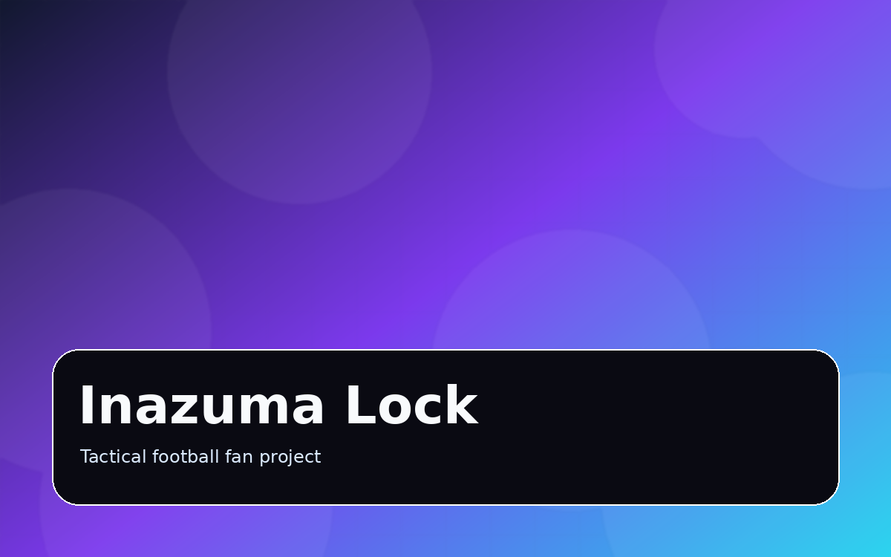
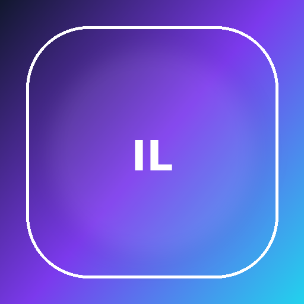
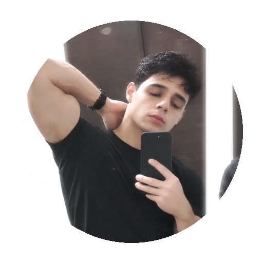
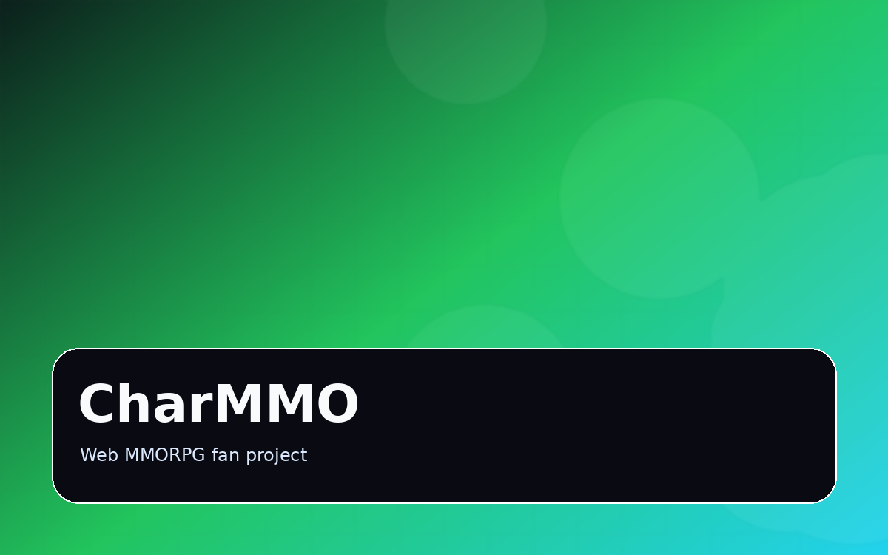
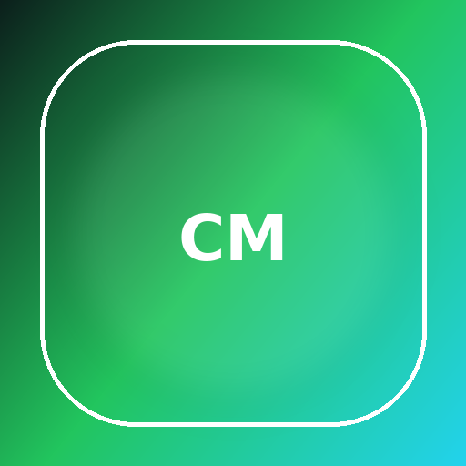
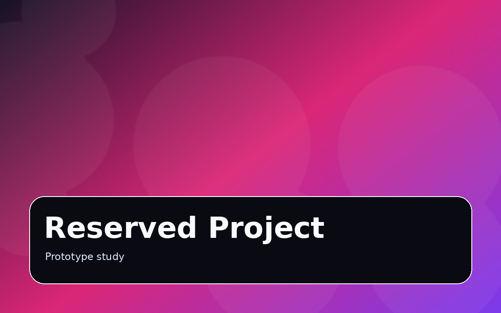
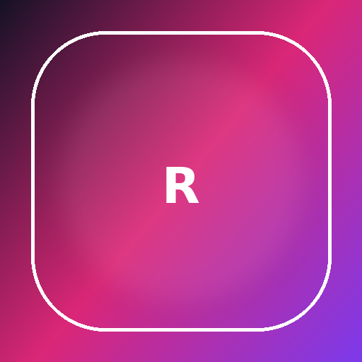

Em desenvolvimento
Inazuma Lock
Fan project inspirado em Inazuma Eleven e Blue Lock, com futebol tático, partidas simuladas e progressão de jogadores.

Portfólio de projetos digitais
Um espaço para reunir projetos próprios, fan projects, interfaces, testes de gameplay e aplicações web que estou construindo com foco em produto, código e experiência.
Projetos
Projetos em fases diferentes: alguns são demos, outros ainda estão em prototipagem ou estruturação técnica.

Em desenvolvimento
Fan project inspirado em Inazuma Eleven e Blue Lock, com futebol tático, partidas simuladas e progressão de jogadores.

Online systems
Fan project inspirado em Pokémon, misturando exploração online, criação de conta, ranking, chat e sistemas de MMORPG.

Em estudo
Espaço reservado para um próximo projeto, ainda em fase de testes, documentação e definição de escopo.
Stack
Ferramentas que uso para criar interfaces, sistemas online, autenticação, banco de dados e deploy.
Estrutura, interface, responsividade e interações no navegador.
Autenticação, banco de dados, regras de segurança e sistemas online.
Publicação de projetos, páginas estáticas e testes acessíveis pela web.
Sobre
A ideia deste site é reunir o que estou criando, testando e melhorando. Alguns projetos são páginas estáticas, outros usam serviços como Firebase e Cloudflare, mas todos fazem parte da minha evolução com desenvolvimento web e games.